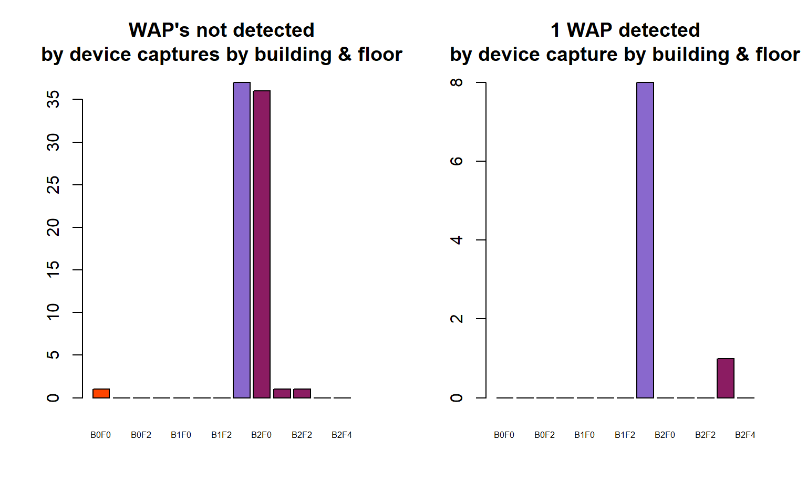
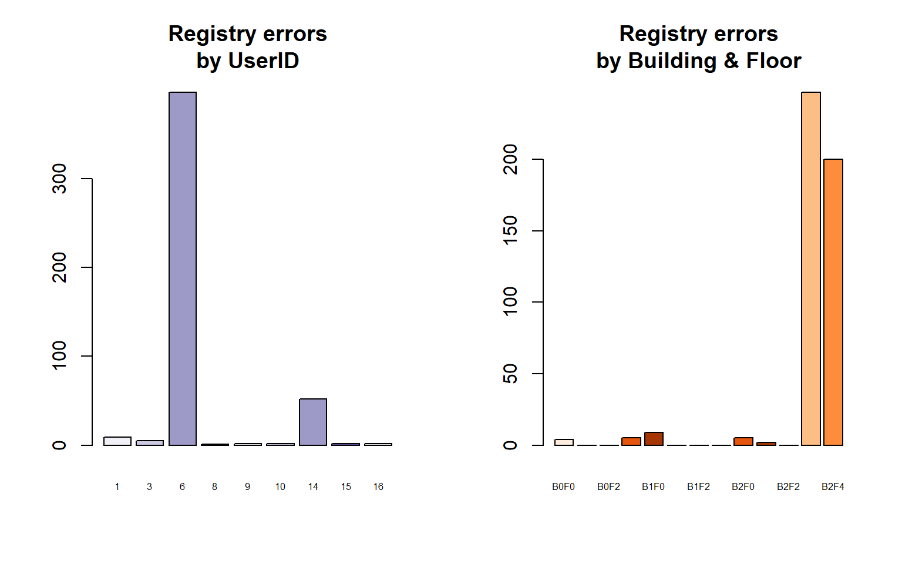

Wi-Fi positioning system
Bold text in English.
Texto en cursiva en Español.
Number of captures by BUILDING
df.train$BF = paste0("B",df.train$BUILDINGID,"F",df.train$FLOOR)
df.train$BF = as.factor(df.train$BF)
df.val$BF = paste0("B",df.val$BUILDINGID,"F",df.val$FLOOR)
df.val$BF = as.factor(df.val$BF)
## DISTRIBUTION OF THE DATA ON TRAINING AND VALIDATION
par(mfrow = c(1,2))
barplot(table(df.train$BUILDINGID), col = c("orangered1", "mediumpurple3", "maroon4"), main = "Training\nby Building")
barplot(table(df.val$BUILDINGID), col = c("orangered1", "mediumpurple3", "maroon4"), main = "Validation\nby Building")
Non detected WAP’s
Locating WAP’s that have not been detected by any device.
Localizamos los WAPs que no han sido detectados por ningun dispositivo.
WAPnotDetected.val = as.character()
WAPnotDetected.tr = as.character()
# VALIDATION
for (i in 1:which(names(df.val)=="WAP520")){
if (sum(df.val[i]) == 100*nrow(df.val)){
#cat("El", names(df.val[i]), "no ha sido detectado por ningun dispositivo en el validation\n")
WAPnotDetected.val = c(WAPnotDetected.val, names(df.val[i]))
}
}
# TRAINING
for (i in 1:which(names(df.train)=="WAP520")){
if (sum(df.train[i]) == 100*nrow(df.train)){
#cat("El", names(df.train[i]), "no ha sido detectado por ningun dispositivo en el training\n")
WAPnotDetected.tr = c(WAPnotDetected.tr, names(df.train[i]))
}
}WAP’s not detected in the VALIDATION set are shown below. We remove them from both datsets.
Se muestran abajo los WAPs no detectados en el VALIDATION set. Los eliminamos de ambos datsets.
WAPnotDetected.val## [1] "WAP002" "WAP005" "WAP006" "WAP007" "WAP079" "WAP133" "WAP157"
## [8] "WAP163" "WAP193" "WAP194" "WAP197" "WAP198" "WAP199" "WAP200"
## [15] "WAP205" "WAP206" "WAP208" "WAP209" "WAP210" "WAP211" "WAP212"
## [22] "WAP213" "WAP214" "WAP218" "WAP219" "WAP220" "WAP221" "WAP228"
## [29] "WAP230" "WAP231" "WAP235" "WAP250" "WAP251" "WAP252" "WAP291"
## [36] "WAP298" "WAP302" "WAP306" "WAP339" "WAP347" "WAP357" "WAP361"
## [43] "WAP363" "WAP366" "WAP367" "WAP368" "WAP369" "WAP370" "WAP371"
## [50] "WAP372" "WAP373" "WAP374" "WAP375" "WAP376" "WAP377" "WAP378"
## [57] "WAP379" "WAP380" "WAP381" "WAP382" "WAP383" "WAP384" "WAP385"
## [64] "WAP386" "WAP387" "WAP388" "WAP389" "WAP390" "WAP391" "WAP392"
## [71] "WAP393" "WAP394" "WAP395" "WAP396" "WAP397" "WAP398" "WAP399"
## [78] "WAP400" "WAP401" "WAP402" "WAP403" "WAP404" "WAP405" "WAP406"
## [85] "WAP407" "WAP408" "WAP409" "WAP410" "WAP411" "WAP412" "WAP413"
## [92] "WAP414" "WAP415" "WAP417" "WAP420" "WAP421" "WAP424" "WAP425"
## [99] "WAP427" "WAP428" "WAP430" "WAP431" "WAP432" "WAP435" "WAP436"
## [106] "WAP437" "WAP439" "WAP440" "WAP446" "WAP447" "WAP448" "WAP450"
## [113] "WAP453" "WAP454" "WAP455" "WAP457" "WAP459" "WAP460" "WAP461"
## [120] "WAP462" "WAP463" "WAP464" "WAP465" "WAP466" "WAP467" "WAP468"
## [127] "WAP469" "WAP470" "WAP471" "WAP472" "WAP473" "WAP474" "WAP476"
## [134] "WAP477" "WAP479" "WAP480" "WAP490" "WAP503" "WAP504" "WAP505"
## [141] "WAP506" "WAP507" "WAP509" "WAP510" "WAP511" "WAP512" "WAP513"
## [148] "WAP514" "WAP515" "WAP516" "WAP517" "WAP518" "WAP519"# which(names(df.val) %in% WAPnotDetected.val) #These are the indices.
df.val = df.val[, -which(names(df.val) %in% WAPnotDetected.val)]
df.train = df.train[, -which(names(df.train) %in% WAPnotDetected.tr)]Looking for the intersect of attributes appearing in both datasets. Attributes in VALIDATION that appear in TRAINING and vice versa. VALIDATION attributes that appear in TRAINING first.
Buscamos la interseccion de los atributos que aparecen en ambos conjuntos de datos. Atributos en VALILDATION que aparecen en TRAINING y viceversa. Los atributos de VALIDATION que aparecen en TRAINING primero.
tr.in.val.idxs = which(names(df.train) %in% names(df.val))
df.train = df.train[, tr.in.val.idxs]
val.in.tr.idxs = which(names(df.val) %in% names(df.train))
df.val = df.val[, val.in.tr.idxs]Device captures detecting WAP’s
Checking if there are any device captures that have not detected any WAP or if only one WAP was detected in TRAINING, to see if something strange happened with them. Those will be removed from the datasets.
Comprobamos si hay capturas de dispositivos que no han detectado ningun WAP o que han detectado unicamente uno en TRAINING, para ver si ocurre algo extraño con ellas. Seran eliminadas del dataset.
DEVICEnotDetected.tr = c()
DEVICEdetected1WAP.tr = c()
for (i in 1:nrow(df.train)){
if (sum(df.train[i, 1:last(grep(pattern = "WAP", names(df.train)))]) == 100*last(grep(pattern = "WAP", names(df.train)))){
#print(rownames(df.train[i,]))
DEVICEnotDetected.tr = c(DEVICEnotDetected.tr, as.numeric(rownames(df.train[i,])))
} else if (sum(df.train[i, 1:last(grep(pattern = "WAP", names(df.train)))] != 100) == 1){
#print(rownames(df.train[i,]))
DEVICEdetected1WAP.tr = c(DEVICEdetected1WAP.tr, as.numeric(rownames(df.train[i,])))
}
}
# names(df.train[first(grep("[^WAP0-9]", names(df.train)))])
df.DEVICESnotDetected.tr = df.train[DEVICEnotDetected.tr, 313:length(names(df.train))]
df.DEVICEdetected1WAP.tr = df.train[DEVICEdetected1WAP.tr, 313:length(names(df.train))]
DEVICESrm.tr = sort(c(DEVICEnotDetected.tr, DEVICEdetected1WAP.tr))
df.train = df.train[-DEVICESrm.tr, ]
par(mfrow = c(1,2))
barplot(table(df.DEVICESnotDetected.tr$BF), col = c("orangered1", "orangered1", "orangered1", "orangered1", "mediumpurple3", "mediumpurple3","mediumpurple3","mediumpurple3", "maroon4","maroon4","maroon4","maroon4","maroon4"), main = "WAP's not detected\nby device captures by building & floor")
barplot(table(df.DEVICEdetected1WAP.tr$BF), col = c("orangered1", "orangered1", "orangered1", "orangered1", "mediumpurple3", "mediumpurple3","mediumpurple3","mediumpurple3", "maroon4","maroon4","maroon4","maroon4","maroon4"), main = "1 WAP detected\nby device capture by building & floor")
The same operation is carried out in the VALIDATION dataset.
La misma operacion es llevada a cabo en el dataset VALIDATION.
DEVICEnotDetected.val = c()
DEVICEdetected1WAP.val = c()
for (i in 1:nrow(df.val)){
if (sum(df.val[i, 1:last(grep(pattern = "WAP", names(df.val)))]) == 100*last(grep(pattern = "WAP", names(df.val)))){
#print(rownames(df.val[i,]))
DEVICEnotDetected.val = c(DEVICEnotDetected.val, as.numeric(rownames(df.val[i,])))
} else if (sum(df.val[i, 1:last(grep(pattern = "WAP", names(df.val)))] != 100) == 1){
#print(rownames(df.val[i,]))
DEVICEdetected1WAP.val = c(DEVICEdetected1WAP.val, as.numeric(rownames(df.val[i,])))
}
}
DEVICEnotDetected.val## NULLDEVICEdetected1WAP.val## [1] 1df.val = df.val[-DEVICEdetected1WAP.val, ]Tracing wrong RSSI registry captures
Locating WAP’s and captures that have RSSI values between 0 and -30 since those records are considered anomalous and we will be removed them from the dataset.
Localizamos WAPs y capturas que tengan valores de RSSI entre 0 y -30 ya que, a priori, esos registros son considerados anomalos y los quitaremos del dataset.
# BUSCAMOS EN TRAINING
cptr30 = c()
WAPs30 = c()
for (i in 1:nrow(df.train[,1:312])){
for (j in 1:ncol(df.train[,1:312])){
if (df.train[i,j] <= 0 & df.train[i,j] >= -30){
cptr30 = c(cptr30,i)
WAPs30 = c(WAPs30,j)
}
}
}
cptr30 = unique(as.vector(cptr30))
WAPs30 = unique(as.vector(WAPs30))
df.cptr30 = df.train[cptr30,]
df.WAPs30 = df.train[,WAPs30]In TRAINING there are 472 captures with anomalous values. There are 56 WAP’s that include anomalous values, but these also include normal records, so surely the problem is not the WAP itself, but the captures.
When exploring in VALIDATION, there is not any RSSI anomalous value record, so there is a problem with the TRAINING captures on which we will take a look next.
En TRAINING existen 472 capturas con valores anomalos. Los WAPs que incluyen valores anomalos son un total de 56, pero estos tambien incluyen registros normales, por lo que seguramente el problema no es el WAP en si, sino las capturas.
Al hacer la misma busqueda en el VALIDATION, no se encuentra ningun registro con vallor RSSI con valores anomalos, con lo que existe algun problema con las capturas en TRAINING que estudiaremos a continuacion.
Taking a glance at wrong RSSI registry captures
par(mfrow = c(1,2))
barplot(table(df.cptr30$USERID), col = brewer.pal(n = 4, name = "Purples"), main = "Registry errors\nby UserID") #El usuario que tiene mas errores de medicion es el USERID 6, seguido del 14.
barplot(table(df.cptr30$BF), col = brewer.pal(n = 5, name = "Oranges"), main = "Registry errors\nby Building & Floor")
par(mfrow = c(1,1))
df.cptr30$FLOOR = factor(df.cptr30$FLOOR)
df.cptr30$BUILDINGID = factor(df.cptr30$BUILDINGID)
df.cptr30 %>%
select(USERID, PHONEID, BF) %>%
filter(USERID == 6) %>%
summary()## USERID PHONEID BF
## Min. :6 Min. :19 B2F3 :202
## 1st Qu.:6 1st Qu.:19 B2F4 :195
## Median :6 Median :19 B0F0 : 0
## Mean :6 Mean :19 B0F1 : 0
## 3rd Qu.:6 3rd Qu.:19 B0F2 : 0
## Max. :6 Max. :19 B0F3 : 0
## (Other): 0df.cptr30 %>%
select(USERID, PHONEID, BF) %>%
filter(USERID == 14) %>%
summary()## USERID PHONEID BF
## Min. :14 Min. :7 B2F3 :45
## 1st Qu.:14 1st Qu.:7 B1F0 : 7
## Median :14 Median :7 B0F0 : 0
## Mean :14 Mean :7 B0F1 : 0
## 3rd Qu.:14 3rd Qu.:7 B0F2 : 0
## Max. :14 Max. :7 B0F3 : 0
## (Other): 0The user who has the most measurement errors is USERID 6, followed by 14. The places where most of these measurement errors occur are the 3rd and 4th floors of Building 2.
The USERID 14 uses a Samsung mini GT-S6500 with Android 2.3.6 Gingerbread, a very old version of Android for a modern device in the year of the study, which could be producing errors. Even so, the USERID 6 uses a Google Nexus 4 with Android 4.2.2 Kitkat that was the latest version of Android at that time and also presents registration problems, although not as many as USERID 14.
Those captures will be removed to avoid issues.
El usuario que tiene mas errores de medicion es el USERID 6, seguido del 14. Los lugares donde ocurren la mayoria de estos errores de medicion son la planta 3 y 4 del edificio 2.
El USERID 14 utiliza un Samsung mini GT-S6500 con Android 2.3.6 Gingerbread, una version de Android ya muy antigua para un dispositivo moderno en el año del estudio, lo cual podria estar produciendo errores. Aun y asi, el USERID 6 utiliza un Google Nexus 4 con Android 4.2.2 Kitkat que era la ultima version de Android en ese momento y tambien presenta problemas de registro, aunque no tantos como USERID 14.
Las capturas seran eliminadas para evitar problemas.
Visualizing how many anomalous captures will be removed from each floor
vec.cptr30 = as.integer(row.names(df.cptr30))
barplot(table(df.train$BF) - table(df.train[-vec.cptr30,]$BF), col = brewer.pal(n = 7, name = "Purples"), main = "Number of deleted records\nby Building & Floor")df.train = df.train[-vec.cptr30, ]About 450 records with registration problems will be removed, focusing on floors 4th and 5th from 2nd buiding. This could affect the kappa coefficient later on.
Se eliminaran alrededor de 450 capturas con problemas de registro, casi todas de las plantas 4 y 5 del edifico 2. Esto podria afectar al coeficiente kappa mas adelante.
Duplicated rows
Identifying and removing duplicated TRAINING rows.
Identificamos y quitamos las filas duplicadas del TRAINING.
duplicated.rows = df.train[duplicated(df.train), ]
nrow(duplicated.rows)## [1] 634barplot(table(duplicated.rows$BF), col = brewer.pal(n = 7, name = "Purples"), main = "Number of duplicated rows\nby Building & Floor")df.train = df.train[!duplicated(df.train), ]Removing another 219 records from building 1 floor 1 and 374 from building 2 floor 4.
Eliminamos otras 219 capturas del edificio 1 planta 1 y 374 del edificio 2 planta 4.
Once the data sets have been pre-processed, the machine learning process will be carried out, predicting the building ID where a capture is located first, followed by the floor in which it is located and its latitude and longitude.
Una vez que se han pre procesado los data sets, llevaremos a cabo el proceso de machine learning, prediciendo primero el ID del edificio donde se encuentra una captura, seguido de la planta en la que se encuentras y la latitud y la longitud.
Formatting categorical data
df.val$FLOOR = factor(df.val$FLOOR)
df.val$BUILDINGID = factor(df.val$BUILDINGID)
df.train$FLOOR = factor(df.train$FLOOR)
df.train$BUILDINGID = factor(df.train$BUILDINGID)Data partition for Building
building.vec = createDataPartition(y = df.train$BUILDINGID, times = 1, p = 0.3)
# Training data
building.tr = df.train[building.vec$Resample1, c(1:last(grep(pattern = "WAP", names(df.train))), which(names(df.train) == "BUILDINGID"))]
building.tr$BUILDINGID = factor(building.tr$BUILDINGID)
#Proporcion de datos en TRAIN y SAMPLE
prop.table(table(df.train$BUILDINGID))##
## 0 1 2
## 0.2793129 0.2605889 0.4600982prop.table(table(building.tr$BUILDINGID))##
## 0 1 2
## 0.2792889 0.2606222 0.4600889Building prediction with Random Forest
# bestmtry = tuneRF(x = building.tr, y = building.tr$BUILDINGID, ntreeTry = 200, plot = T)
rf.fit.building = randomForest(x = building.tr, y = building.tr$BUILDINGID, ntree = 50#, mtry = 50
)
rf.pred.building = predict(rf.fit.building, df.val)
confusionMatrix(data = factor(rf.pred.building), reference = df.val$BUILDINGID)## Confusion Matrix and Statistics
##
## Reference
## Prediction 0 1 2
## 0 536 0 0
## 1 0 306 0
## 2 0 0 268
##
## Overall Statistics
##
## Accuracy : 1
## 95% CI : (0.9967, 1)
## No Information Rate : 0.4829
## P-Value [Acc > NIR] : < 2.2e-16
##
## Kappa : 1
## Mcnemar's Test P-Value : NA
##
## Statistics by Class:
##
## Class: 0 Class: 1 Class: 2
## Sensitivity 1.0000 1.0000 1.0000
## Specificity 1.0000 1.0000 1.0000
## Pos Pred Value 1.0000 1.0000 1.0000
## Neg Pred Value 1.0000 1.0000 1.0000
## Prevalence 0.4829 0.2757 0.2414
## Detection Rate 0.4829 0.2757 0.2414
## Detection Prevalence 0.4829 0.2757 0.2414
## Balanced Accuracy 1.0000 1.0000 1.0000# How many devices (captures) have been missclassified for each Building
abs(table(rf.pred.building) - table(df.val$BUILDINGID))## rf.pred.building
## 0 1 2
## 0 0 0The Random Forest method fits a perfectly on the VALIDATION data. The next step is to replace the actual BUILDING ID values with the predicted ones, although in this case they are exactly the same.
El metodo Random Forest hace una clasificacion perfecta de los datos de VALIDATION. El siguiente paso es sustituir los datos de BUILDING ID reales por los predichos, aunque en este caso son exactamente los mismos.
Replacing actual Building ID values for predicted ones
df.val$BUILDINGID = rf.pred.building
str(df.val$BUILDINGID)## Factor w/ 3 levels "0","1","2": 3 3 3 1 3 3 3 3 3 3 ...In the 3 following scripts the prediction of FLOOR is separately carried out for each of the buildings.
En los siguientes 3 scripts se lleva a cabo la prediccion de FLOOR por cada uno de los edificos por separado.